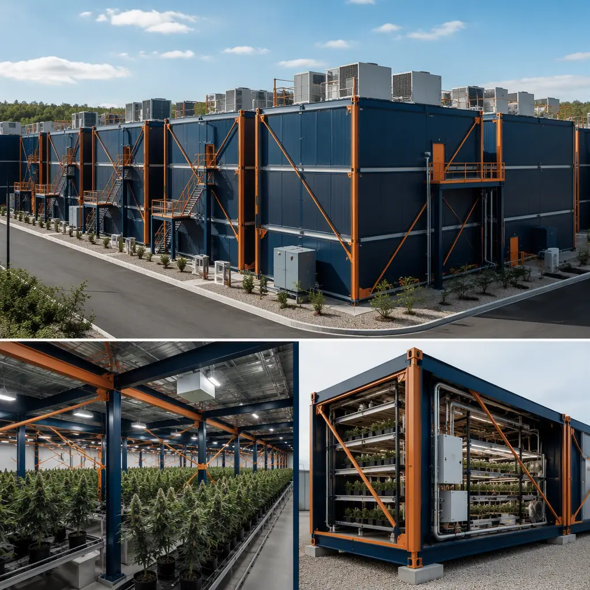
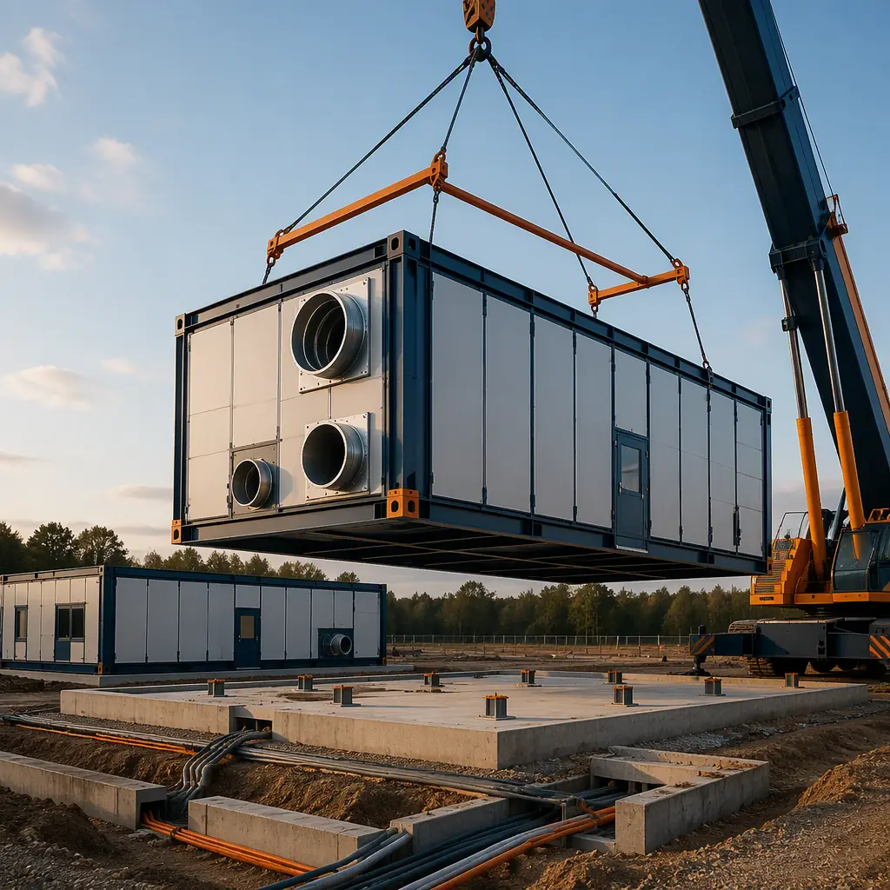
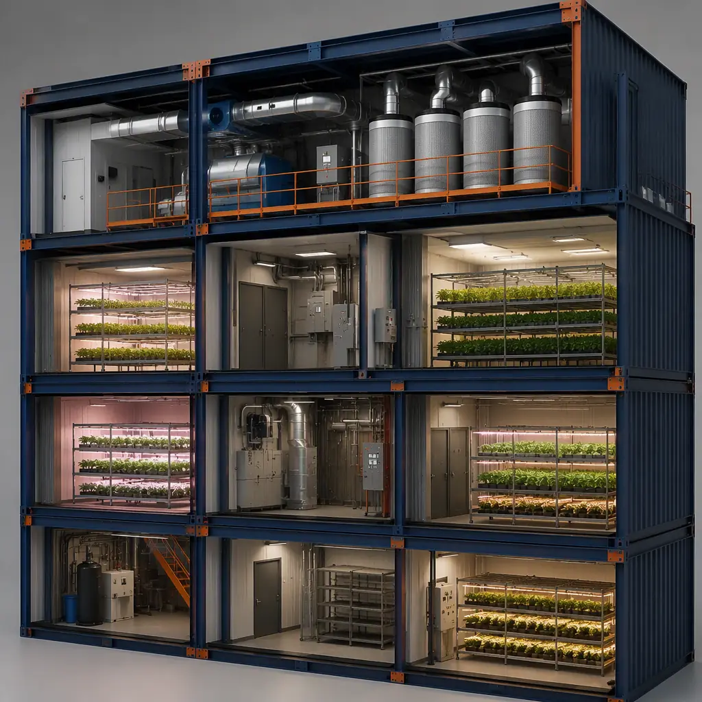
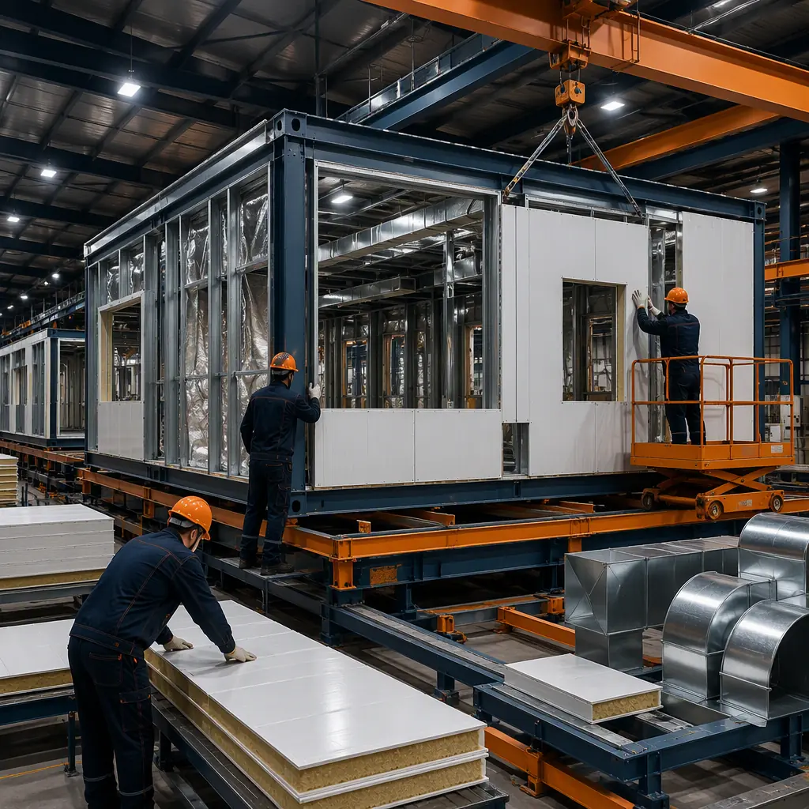

The legal cannabis industry is the fastest-growing building sector most general contractors have never worked in. US regulated cannabis sales reached $31 billion in 2025, with 24 states now operating adult-use programs and medical programs in 38 states — and nearly every one of those markets is short of licensed cultivation capacity. Licensed cultivators face a hard regulatory clock: most state licenses require the facility to be built and operational within 12–24 months of award, or the license lapses. Yet conventional cultivation construction routinely runs 18–30 months, because grow facilities are not simple warehouses — they combine cleanroom-grade environmental control, heavy HVAC and electrical loads, fire-rated separation, odor management, and strict security requirements in a single building program. Modular prefabricated construction compresses that program by manufacturing grow rooms, flower rooms, and processing buildings as factory-built steel-frame modules while site civil works and utility connections proceed in parallel. A typical 20,000 sq ft cultivation build that takes 14–18 months conventionally can be delivered in 8–12 months with modular methods — the same concurrent-production economics that drive modular agricultural and food processing facilities.

Why Cultivation Facility Construction Is a Bottleneck for Licensed Operators
Cultivation facilities combine the environmental control of a laboratory with the scale of an industrial building — a combination that makes conventional delivery slow and risky:
- The license clock does not wait for construction. State programs from Michigan to Massachusetts grant provisional licenses with build-out deadlines of 12–24 months, and operators who miss the window can lose substantial licensing fees and bonding. Modular delivery front-loads production: the grow rooms are being manufactured in the factory while the site is being prepared, so the building arrives ready for equipment and plant installation. This parallel model mirrors what we document for modular gigafactory construction, where production-equipment installation waits on no part of the building program.
- Environmental control is the actual product. A flower room must hold temperature within ±2°F, relative humidity within ±5%, and CO2 levels at 800–1,500 ppm while exhausting heat from 1,000+ watt lighting fixtures. Conventional builds discover vapor-pressure deficit mismatches only after plants are in the room, at a cost of an entire crop cycle. Factory-built modules arrive with HVAC ducting, environmental sensors, and control wiring pre-installed and tested — the same discipline that modular cleanroom and semiconductor facilities rely on.
- Compliance is inspection-intensive. Cultivation facilities are governed by state cannabis regulations layered on top of IBC, NFPA 1 Fire Code, and local building codes — with fire-rated separation between cultivation and processing areas, sealed electrical rooms, and security systems that must pass audit before the first plant goes in. Factory fabrication with third-party inspection at the point of manufacture compresses the field inspection phase that conventionally adds 3–6 months. Fire-rated assembly design for prefabricated buildings is covered in our guide to modular fire safety.
- Odor control is a community and compliance issue. Most state programs require odor abatement systems capable of treating the full facility exhaust, typically with activated carbon filtration sized for 6–10 air changes per hour in cultivation areas. Factory-built HVAC mezzanine modules arrive with carbon filter banks, fans, and ducting pre-mounted — eliminating field-measured and field-fabricated ductwork that routinely delays conventional projects by 2–3 months.


What Gets Factory-Built — The Cultivation Module Package
The modular cultivation building divides into functional modules that can be manufactured, tested, and shipped independently:
Grow Rooms and Flower Rooms
Flower rooms are the heart of the facility — sealed, light-tight rooms typically 40–60 ft long with reflective walls, 12–16 ft ceilings, and environmental control zones sized for the lighting load. Modular flower rooms arrive as factory-built steel modules with insulated wall panels, light-lock vestibules, floor drains with sealed penetrations, and electrical distribution pre-installed. A conventional 10,000 sq ft flower room build takes 5–7 months on site; factory production compresses that to 2–3 months, with the room arriving fully sealed and pressure-tested. The same panelized, climate-sealed approach serves modular cold storage facilities.
Vegetative, Mother, and Clone Rooms
Propagation spaces need lower light intensity but tighter humidity control and more frequent access than flower rooms. They are typically built as smaller modules (24–32 ft bays) with separate HVAC zones, so operators can hold mothers and clones at 70–75°F and 60–65% RH while flower rooms run their own climate. Modular zoning makes this separation exact — each bay is its own factory-built enclosure with independent controls, avoiding the cross-zone contamination that plagues open-plan conventional builds.
Processing, Trimming, and Packaging Rooms
Post-harvest spaces require food-grade finishes, washable surfaces, and in many states separation from cultivation areas with fire-rated construction and negative-pressure ventilation. Modular processing rooms arrive with epoxy-finished floors, stainless trim, and equipment-integration supports pre-installed — compressing a 3–5 month fit-out to a few weeks of setting and connection. Food-grade facility standards for prefabricated buildings are detailed in our agricultural and food processing guide.
Extraction and Laboratory Suites
Extraction rooms handle flammable solvents (butane, ethanol, CO2) and are governed by NFPA 1 Chapter 38, IFC Chapter 57, and state-specific rules requiring explosion-control ventilation, rated enclosures, and gas detection. Factory-built extraction suites arrive with the exhaust systems, rated wall assemblies, and monitoring infrastructure pre-installed and documented — the compliance paperwork alone saves operators 1–2 months of licensing time. The hazardous-process enclosure approach parallels heavy industrial modular construction in chemical and process industries.
Security, Vestibule, and Administrative Modules
State cannabis programs uniformly require controlled access, video surveillance with 30–90 day retention, and separation between public and licensed areas. Modular security packages — entry vestibules with mantrap-style access control, security rooms with camera and alarm infrastructure pre-wired, and administrative offices — arrive factory-built with the required systems documented for the license application. Because the security layout is designed into the module package from the start, operators avoid the retrofitted camera and access-control work that conventionally adds $50,000–$150,000 and 4–8 weeks to a build. Secure-facility design experience from our modular government and municipal building work applies directly to cannabis compliance.

Environmental Control Is the Real Product
The building envelope and HVAC system determine crop quality more than any other capital decision. Key engineering parameters for modular cultivation facilities:
- Cooling load is lighting-driven. A flower room running 1,000 W fixtures at 2.0–2.5 plants per sq ft generates 35–45 BTU/hr per sq ft of cooling load — roughly double a typical office. Factory-built HVAC mezzanines are sized and ducted for this load profile at design time, not discovered during commissioning.
- Dehumidification is separate from cooling. Commercial grow operations typically need 3–5 tons of dehumidification per 1,000 sq ft in flower, independent of the cooling system, to hold 50–55% RH through the dark cycle. Modular designs dedicate factory-installed ducted dehumidifier packages to each zone.
- Air changes and filtration. State programs commonly require 4–6 air changes per hour in cultivation and 10+ in processing areas, with HEPA or MERV-14 filtration where required. Factory-built air handlers arrive with the specified filter banks, carbon odor scrubbing, and negative-pressure capability documented for the license application.
- CO2 enrichment and sensing. Enrichment to 800–1,500 ppm raises yield 15–30% in sealed rooms, but requires sealed envelopes — a module seam-sealed in the factory holds pressure far better than a stick-built room with field-sealed joints. Energy strategy for controlled-environment buildings is covered in our modular energy efficiency guide.
- Lighting infrastructure is a structural load. Commercial cultivation runs 30–50 W per sq ft of lighting load — LED fixtures suspended from the ceiling, with corresponding heat rejection and electrical distribution. Factory-built modules arrive with ceiling-mounted fixture rails, power distribution, and the structural reinforcement for light racks pre-installed, eliminating the field engineering that conventionally delays lighting installation by 4–6 weeks.
All of these systems are coordinated through a building management system that is pre-wired in the factory — temperature, humidity, CO2, and power monitoring for every zone, with alarms and remote access configured before the module ships. Operators commissioning a modular facility typically validate environmental setpoints within days of connection, rather than spending the first 60–90 days of a conventional build chasing HVAC balance issues while the license clock runs.
Compliance & Licensing — Codes Governing Cultivation Facilities
Cultivation facilities operate under a layered regulatory regime: state cannabis control boards set security, track-and-trace, and facility standards; IBC governs occupancy and fire-resistance; NFPA 1 and NFPA 101 set fire code and life safety requirements; and local jurisdictions add zoning, odor, and noise ordinances. Modular delivery supports compliance by enabling factory-documented fabrication — fire-rated assemblies certified by third-party labs, sealed electrical rooms with tested penetrations, and security systems (camera, access control, and alarm infrastructure) pre-wired before shipment — while the compressed schedule reduces the period during which a partially built site exposes an operator to license risk. Permitting strategy for prefabricated projects is covered in our guide to permitting and zoning.
Phased Expansion — Why Cultivation Operators Grow Modularly
Few cultivation businesses need their full licensed capacity on day one, and most state programs allow phased build-out as production ramps. Modular delivery maps directly onto that phasing: an operator can deploy a starter package — a few flower rooms, a veg room, and a processing module — generate revenue, and add modules as demand grows, without disrupting operating rooms. Each phase reuses the same factory-produced module designs, so later phases benefit from the as-built documentation and commissioning experience of earlier ones. This production-line repeatability is the same advantage that drives modular ROI analysis for multi-site operators, and it makes modular cultivation campuses particularly attractive to investment-backed operators who need to match capital deployment to license milestones and market conditions.
Cost Structure — Modular vs. Conventional Cultivation Build
| Cost Category | Conventional (20,000 sq ft) | Modular (20,000 sq ft) |
|---|---|---|
| Building shell & envelope | $1.6–2.4M ($80–120/sq ft) | $1.3–2.0M ($65–100/sq ft) |
| HVAC, dehumidification & odor control | $1.0–1.6M | $0.85–1.35M (factory-integrated) |
| Electrical, lighting & controls | $0.9–1.5M | $0.75–1.25M (pre-wired modules) |
| Security, fire protection & compliance systems | $0.4–0.7M | $0.3–0.55M (factory-installed) |
| Field labor, temp facilities & weather risk | $0.6–1.0M | $0.25–0.45M |
| Total Build Cost | $4.5–7.2M | $3.45–5.6M |
The 20–25% building cost reduction compounds with 4–8 months of earlier operation. On a facility producing 1,500–2,500 lbs of flower per year at $1,200–$2,000 per pound wholesale, each month of earlier harvest is worth $150,000–$400,000 in revenue — which is why operators consistently prioritize schedule over first cost. For a full treatment of modular project economics, see our 2026 modular cost guide and our developer's ROI analysis.
Is Modular Right for Your Cultivation Project?
Modular cultivation delivery delivers the strongest value for licensed operators facing state build-out deadlines, multi-phase operators who can capture production-line repeatability across several sites, and projects in cold or weather-sensitive regions where year-round factory production beats a seasonal site schedule. For greenhouse-hybrid and light-deprivation models, a hybrid approach — modular grow rooms and processing buildings with conventional greenhouse structures — delivers most of the speed and compliance benefits while preserving the greenhouse economics. For operators expanding capacity, modular delivery converts the building program from the project's longest schedule risk into a parallel production stream, consistent with the waste reduction and lean manufacturing advantages of prefabricated construction and the quality assurance built into modular factory QC systems.